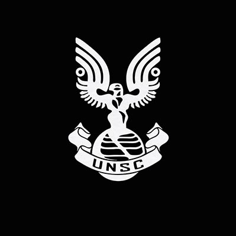
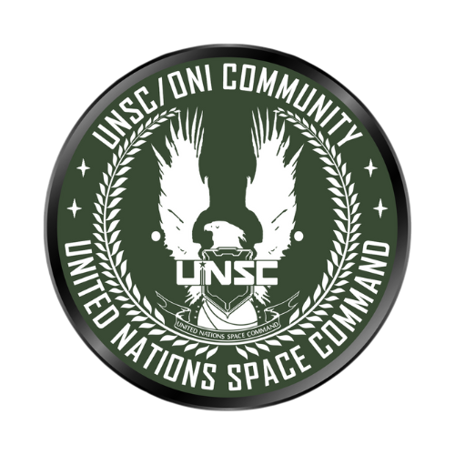
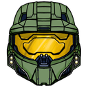
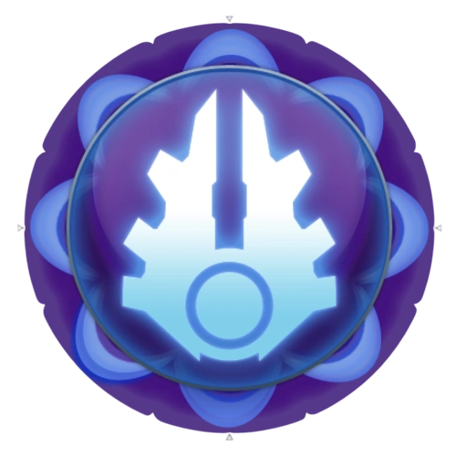
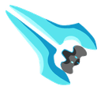
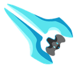

Reglas Básicas.
Reglas Básicas.
 NO ESTA PERMITIDO EL/LA/LOS....
NO ESTA PERMITIDO EL/LA/LOS....
- RDM, Random Deathamch (Matar a alguien aleatoriamente sin justificación).
- RDD, Random Damage (Dañar a alguien de forma aleatoria sin justificación u motivo)
- MG, Metagaming (Buscar información fuera de rol).
- Ghosting (Una vez muerto no podras recordar que paso en tu anterior vida).
- FailRP (Hacer cosas que no debes o romper reglas del trabajo correspondiente).
- Mic-Spam.
- Racismo y comentarios u actos personales a las personas.
- Prop-Kill. (Matar / Dañar a alguien con entidades/props).
- Prop-Surf.
- Prop-Push. (Poner props/entidades en vehiculos).
- Prop-Climb. (Subir a lugares inaccesibles o que solo se puedan subir con props/entidades).
- Hacerse pasar por miembro del staff.
- Abuso de bugs/errores. (Informarlos inmediatamente)
- Spawn Kill (Matar a alguien una y otra ves cada ves que haga spawn).
- FearRP (Acciones que pongan en riesgo tu vida)
- Trolling (Cualquier comportamiento que busque arruinar la experiencia de otros jugadores será sancionada).
- Combat Logging (Desconectarse del servidor para evitar consecuencias en IC, como un arresto o muerte).
- Job Abuse (Cambiar de trabajo para obtener beneficios como por ej, cambiar a médico solo para curarte y luego volver a tu trabajo original).
- Bodyblocking (Bloquear intencionalmente el paso de otros jugadores co tu cuerpo o props).
- Invitación a la party/squad de otras facciones a la tuya.
- Nombres inapropiados para las squad, deben ser formales y respetuosos (EJ: alfa, beta, gamma, etc.)
- Nombres inapropiados para tu personajes, deben ser formales y respetuosos (EJ: Pablo Hernandez).
Reglas/comandos y ayudas del chat.
 - Con: @ (Nombre de usuario) - (Regla Rota) Puedes denunciar a alguien.
- Con: /discord o !discord, podrás acceder a nuestro discord oficial de Trauma Community!
- Con: /coleccion o !coleccion podrás acceder a la coleccion del servidor para instalar los content.
- Con /rpdesc puedes ponerte una descripción para tu personaje siempre y cuando respetando este formulario:
- Con !motd podrás ver las reglas (El mismo menú que estas viendo ahora mismo).
- ¿Eres nuevo y necesitas completar el entrenamiento? usa "/e necesito entrenamiento" e inmediatamente deberia ir un instructor a enseñarte.
- Para poder hablar en forma fuera de rol (Out Or Character) debes usar // (Mensaje) (Tambien: /a o /ooc) A parte de que todos lo van a leer, de forma local es con /looc o /l.
- Para poder escribir con mas alcance puedes usar el comando /y para gritar, y para hablar de forma cerrada (susurro) es con /w
- Con /pm (Usuario) puedes enviarle un mensaje privado a algun usuario.
- Con !thirdperson menu puedes modificar la camara y crosshair de tercera persona.
- Con: !warn o !warns puedes ver cuantos warneos has acumulado hasta ahora.
- Con: @ (Nombre de usuario) - (Regla Rota) Puedes denunciar a alguien.
- Con: /discord o !discord, podrás acceder a nuestro discord oficial de Trauma Community!
- Con: /coleccion o !coleccion podrás acceder a la coleccion del servidor para instalar los content.
- Con /rpdesc puedes ponerte una descripción para tu personaje siempre y cuando respetando este formulario:
- Con !motd podrás ver las reglas (El mismo menú que estas viendo ahora mismo).
- ¿Eres nuevo y necesitas completar el entrenamiento? usa "/e necesito entrenamiento" e inmediatamente deberia ir un instructor a enseñarte.
- Para poder hablar en forma fuera de rol (Out Or Character) debes usar // (Mensaje) (Tambien: /a o /ooc) A parte de que todos lo van a leer, de forma local es con /looc o /l.
- Para poder escribir con mas alcance puedes usar el comando /y para gritar, y para hablar de forma cerrada (susurro) es con /w
- Con /pm (Usuario) puedes enviarle un mensaje privado a algun usuario.
- Con !thirdperson menu puedes modificar la camara y crosshair de tercera persona.
- Con: !warn o !warns puedes ver cuantos warneos has acumulado hasta ahora.
Conquista.
Reglas Generales
 - Para poder volver a atacar el mismo lugar debes respetar el cooldown de 5m.
- No se permite el uso de trucos, exploits o abuso de mecánicas del juego para avanzar en la conquista de un punto. Esto incluye la manipulación de los tiempos de captura o la alteración de los puntos de manera ilegal.
- Una facción puede enviar refuerzos al punto de captura para intentar revertir la situación. Sin embargo, los refuerzos deben llegar de manera realista y en el momento adecuado; no se puede "llenar" un punto con jugadores de inmediato.
- Los puntos obtenidos por captura de zonas se reinician cada semana. El equipo con más puntos al final de la semana será el ganador.
- El objetivo de la conquista es tomar y mantener puntos estratégicos. Cada facción debe trabajar en equipo para lograrlo, siguiendo la jerarquía de su estructura y las órdenes de sus superiores.
- Para poder volver a atacar el mismo lugar debes respetar el cooldown de 5m.
- No se permite el uso de trucos, exploits o abuso de mecánicas del juego para avanzar en la conquista de un punto. Esto incluye la manipulación de los tiempos de captura o la alteración de los puntos de manera ilegal.
- Una facción puede enviar refuerzos al punto de captura para intentar revertir la situación. Sin embargo, los refuerzos deben llegar de manera realista y en el momento adecuado; no se puede "llenar" un punto con jugadores de inmediato.
- Los puntos obtenidos por captura de zonas se reinician cada semana. El equipo con más puntos al final de la semana será el ganador.
- El objetivo de la conquista es tomar y mantener puntos estratégicos. Cada facción debe trabajar en equipo para lograrlo, siguiendo la jerarquía de su estructura y las órdenes de sus superiores.
Reglas de conquista de la UNSC
 - Los miembros de la UNSC pueden utilizar vehículos y recursos disponibles para proteger los puntos de conquista. Los vehículos pueden ser usados para asegurar zonas, pero no deben ser utilizados de manera desproporcionada para bloquear el acceso a puntos.
- El comandante o el líder de escuadra de la UNSC debe guiar a sus soldados durante el proceso de conquista. Las órdenes deben ser claras y basadas en las tácticas militares adecuadas.
- La UNSC debe mantener comunicaciones claras y precisas entre sus tropas durante la conquista, para coordinar ataques y defensas de manera eficiente.
Reglas de conquista de los Covenant
 - Durante la conquista, el liderazgo de los Sangheili será clave. Los Sangheili deben coordinar la acción de los Unggoy y liderar los ataques a los puntos de forma estratégica.
- Los vehículos del Covenant, como los Wraith y Ghosts, son herramientas valiosas en la conquista. Su uso debe ser táctico y no abusivo. Los Sangheili tienen prioridad en su uso para mantener el orden.
- Los Unggoy deben apoyar a los Sangheili durante la conquista. Los Unggoy tienen la tarea de cubrir a los soldados Sangheili, ofreciendo fuego de apoyo.
"La conquista no es solo tomar lo que es nuestro, sino demostrar que somos dignos de aquello que buscamos."

Reglas de la UNSC.
Reglas Generales
- Obedece siempre las ordenes de tu superior.
- Usa el equipo, armas y uniforme correspondiente a tu rango.
- No ingreses a áreas restringidas sin permiso.
- Evita comportamientos fuera de rol que rompan la inmersión del servidor.
- El respeto es importante, trata de mantenerlo.
- Jamás abras fuego contra aliados, incluso como broma.
- Coordina siempre con tu escuadrón en operaciones de combate.
- No uses vehículos o naves si no estás autorizado para ello.
- Respeta las áreas comunes de la base y mantén el orden.
- No robes ni manipules el equipo o vehículos de otros jugadores.
- No puedes usar vehiculos de otras facciones.
- Mantén un enfoque Semi-Serio, equilibrando la inmersión con el disfrute del juego.
- Ayuda a los miembros de tu facción en combate o en situaciones de riesgo.
- Durante las misiones, evita distracciones y enfócate en cumplir los objetivos asignados.
- Usa los canales de comunicación asignados y evita el spam o mensajes irrelevantes.
Dentro de Combate
- Usa la fuerza solo cuando sea necesario y esté justificado por el rol.
- No abandones tu puesto durante el combate sin una orden directa.
- Reporta cualquier problema en la misión al líder de tu escuadrón.
- Sigue estrictamente los objetivos de la misión asignada.
- Si un compañero está herido o cae en batalla, debes ayudar a recuperarlo o defenderlo hasta que sea evacuado o reanime.
"En la UNSC, no somos individuos, somos un escuadrón. Unidos por el deber, guiados por el honor, y fortalecidos por nuestra determinación de proteger a la humanidad."

 Reglas de los Covenant.
Reglas de los Covenant.
Reglas Generales
- Sigue sin cuestionar las órdenes de los Sangheili de alto rango o los líderes designados.
- Honra las creencias de los Forerunners y la misión divina del Covenant.
- Actúa con seriedad y respeta las tradiciones del Covenant y de tu especie.
- Los Sangheili y los Unggoy deben trabajar en armonía para alcanzar los objetivos del Covenant.
- Solo emplea armas, armaduras y vehículos autorizados para tu rango o rol.
- Defiende las instalaciones del Covenant y los artefactos sagrados de cualquier amenaza externa.
- No ataques ni provoques a otros miembros del Covenant, sin importar tu rango.
- Los Unggoy deben seguir siempre a los Sangheili y asumir su rol de apoyo.
- Solo los Sangheili o roles especializados pueden interactuar con artefactos sagrados.
- Durante las misiones, los Sangheili y Unggoy deben seguir estrictamente las tácticas y órdenes dadas por sus comandantes de escuadra.
- Todo miembro del Covenant debe entender que las órdenes y los sacrificios se realizan en nombre del Gran Viaje, y ninguna misión es innecesaria.
- Los conflictos internos deben resolverse siguiendo la estructura del Covenant. No se permite violencia sin el consentimiento de los superiores.
- El combate es la verdadera prueba del honor. Aunque caigas en batalla, hazlo con dignidad, y nunca des la espalda al enemigo sin una orden.
Dentro de Combate
- Siempre lucha en formación y bajo la dirección de los Sangheili.
- Retírate solo si es ordenado por un líder Sangheili o si tu vida está en peligro extremo.
- Como Sangheili, nunca actúes de forma deshonrosa o cobarde.
- Deja que los Sangheili cumplan su rol sin distracciones.
- Combate con la determinación de cumplir la misión sagrada del Covenant.
- Protege las naves y bases del Covenant antes que cualquier otra cosa.
- Los Sangheili deben ser responsables de la seguridad de los Profetas y otros líderes clave dentro de la estructura del Covenant.
- Incluso si las probabilidades están en contra, un miembro del Covenant debe cumplir la misión o morir intentándolo.
"Por el Gran Viaje, sacrificamos todo. Nuestra lealtad, nuestra sangre, todo lo entregamos por el Covenant, pues solo en la destrucción de nuestros enemigos encontramos la verdad del destino."
Reglas de jobs/rangos/ayuda/etc.
Ultima vez actualizado: 27/11/2024